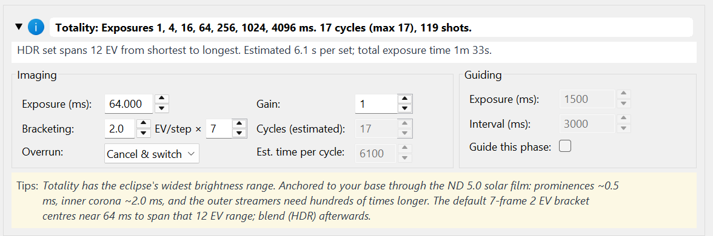
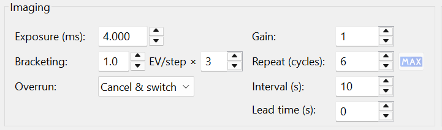
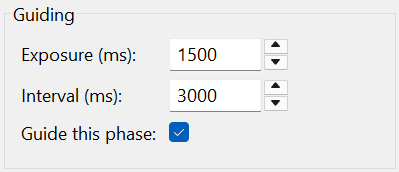

Phase editor
A plan is a sequence of phases, each with its own capture recipe. The phase table and the editor for each phase are where you shape exactly what gets captured, and how fast.
The phase set
HelioMaker builds a phase for each stage of the eclipse. For a total eclipse the set runs, in order:
| Phase | What it captures |
|---|---|
| Pre-eclipse | Before first contact; setup and baseline frames. |
| Partial ingress | C1 → the approach to totality; the shrinking crescent. |
| Thin crescent · C2 | The last sliver before totality (optional; enabled by Include thin-crescent phase). |
| Diamond ring · C2 | The diamond ring / Baily's beads at second contact. |
| Totality (or Annularity, or Central) | The central phase, showing the corona (total), the ring (annular) or the deepest crescent (partial). |
| Diamond ring · C3 | The diamond ring returning at third contact. |
| Thin crescent · C3 | The first sliver after totality (optional). |
| Partial egress | C3 → C4; the widening crescent. |
| Post-eclipse | After fourth contact. |
The C3 phases mirror the C2 phases, so what you set going into totality is echoed coming out.
The phase table
The table lists every phase with its key numbers: Phase, Start, Duration, Gain, Exposure, Bracketing, Cycles, Interval, Shots, Coverage and Guiding. Two narrow columns flag whether the solar filter is off for the phase and whether a meridian crossing falls inside it. Select a row to edit that phase below.

Preview an HDR bracket and compare it with the recommendations
When you select a bracketed phase, expand Phase summary. It lists every exposure time in the HDR bracket and reports the full EV span, estimated time per set and total exposure time. This is the complete capture ladder that results from the selected base exposure, EV step and frame count.
The Tips: panel shows exposure guidance for the selected phase. HelioMaker scales these recommendations from the plan's measured full solar disk exposure and filter density, and accounts for the selected eclipse mode. Use the summary and Tips together while changing the recipe so you can see whether the resulting bracket covers the intended features and still fits the available phase time.

Recipe for each phase
- Exposure (ms): and Gain:
- The exposure and gain for this phase. HelioMaker initially derives them from the measured filtered full solar disk exposure, the reference camera gain, the effective ND rating of the complete filter stack and Fred Espenak's eclipse exposure recommendations. Keeping the same gain for every phase is recommended; make a phase specific gain change only when physical camera testing supports it.
- Bracketing: (
EV/step ×count) - HDR bracketing specifies how many exposures occur in each cycle and how many EV separate them. Deeper brackets around C2/C3 capture the huge dynamic range of the inner corona and prominences.
- Repeat (cycles):
- How many times the recipe repeats within the phase. Max fills the phase's time slot with as many cycles as fit.
- Interval (s):
- The time from the start of one cycle to the start of the next, which defines the cadence rather than the gap between cycles. Max speed sets it to the fastest rate the camera can sustain. Every imaging interval in the plan is shown in seconds, in the phase table and in this editor, including the estimated time per cycle beside it. Guiding is the one exception: the guide exposure and guide interval below remain in milliseconds, which is the unit PHD2 itself uses.
- Lead time (s): / Trail time (s):
- For the diamond ring phases, how far before and after C2 or C3 the selected phase extends. The same controls adjust the applicable edge of a thin crescent phase. Plan preferences supplies the initial values; use these controls only for deliberate phase specific tuning.
- Start before (s): / End after (s): (annular and partial central phase)
- The same pair of controls, renamed for what they do on the central phase of an annular or partial eclipse: how long before and after its anchor the phase runs. For annularity the anchor is the pair of inner contacts, so zero means the phase is exactly C2 to C3 and larger values extend it either side. For a partial eclipse the anchor is maximum itself, and since there are no inner contacts these two values are what give the phase its length. Partial ingress and egress take whatever is left on each side.
- Overrun:
- What to do if a cycle is still running when the phase ends: Cancel & switch or Finish, then switch.

Per phase guiding within the plan limits
PHD2 guiding: in Plan preferences establishes the overall guiding policy and populates the phase plan. The Guide this phase: option then lets you enable or disable guiding for an individual phase where the selected physical setup permits it. The phase panel also provides Exposure (ms): and Interval (ms): for the guide camera. A per phase choice cannot override a guiding restriction imposed by the contact window or the selected camera setup.
The plan-wide Guide interval (ms): is copied to every phase when it changes. Its allowed range is 500 to 6000 ms, with 2000 to 4000 ms recommended as a starting range. Make any phase-specific interval adjustment here after applying Plan preferences; keep the interval longer than the guide exposure.

Applying plan changes
When you apply changed Plan preferences, HelioMaker asks before deriving the affected phase settings again. Within the phase editor, use Max to fill the available time with cycles and Max speed to choose the fastest sustainable interval. Then adjust the phases you care about most, usually the C2/C3 group.